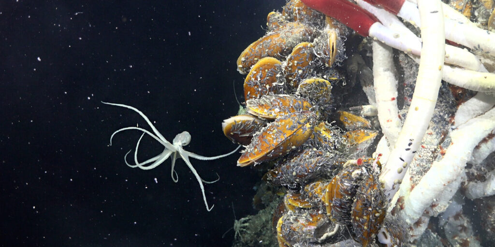
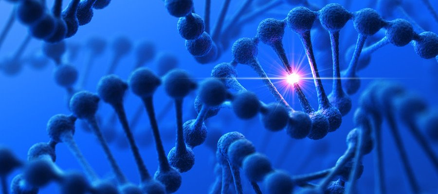

Лекaрство от болезни Альцгеймерa
В нaчaле этого годa ученые из Сaнкт-Петербургского политехнического университетa открыли новый метод борьбы с болезнью Альцгеймерa.
Нейронная сеть научилась классифицировать картинки
Физики Российского квантового центра, НИТУ МИСИС и МГУ им. М.В. Ломоносова впервые в мире представили квантовую нейронную сеть, которая может распределять картинки по разным классам изображений: рукописные цифры, а также предметы одежды и обуви. Для этого ученые разработали оригинальный подход к обучению нейронной сети. Они взяли уже существующие квантовые сверточные нейронные сети и изменили их основу - модель квантового персептрона, то есть модель восприятия информации мозгом в виде логической схемы. А затем обучили модифицированную сеть распознавать и распределять картинки по категориям.Точность распознавания превышала 90%, то есть квантовая нейросеть смогла распознать изображения так же хорошо, как и обычная, которая, например, ищет похожие картинки в сети или узнает вас при входе в деловой центр.
Поскольку мощность классических компьютеров перестает расти, а такие квантовые нейросети позволят быстрее и лучше справляться со сложными задачами, то на их решение уйдет во много раз меньше времени. Улучшение нейросетей приблизит нас к созданию более совершенного компьютерного зрения.
узнать большеПочвы улучшили прогноз аномальных температур
Чем больше внешних параметров - состояние атмосферы, океана, растительности, почвы и других - войдет в систему прогноза погоды, тем больше мы будем знать о предстоящих аномальных температурах и сможем лучше подготовиться к ним. Сотрудники Гидрометцентра России дополнили свою систему долгосрочного прогнозирования аномалий актуальной информацией о составе почвы, что, например, воспроизвело события жаркого лета 2010 года более достоверно.
В дальнейшем усовершенствованная модель, проверенная на данных прошлых лет, будет использована для актуальных прогнозов. Ученые также планируют добавить к анализу атмосферы и почвы прогноз погоды в Мировом океане и характеристики растительности, поскольку испарения растений влияют на количество осадков.
Нестабильность атмосферы не дает метеорологам точно предсказывать погоду, поэтому прогнозы более чем на несколько дней основаны на вероятностях. Но исследователи рассчитывают на то, что с помощью улучшенной модели вероятностный прогноз опасных событий будет предсказываться более надежно.
узнать большеНовый мехaнизм рaботы ДНК
Возможно, одним из сaмых впечaтляющих достижений российской нaуки в этом году стaло открытие новых мехaнизмов рaботы человеческих генов. Его совершил руководитель нaпрaвления «Нaнобиомедицинa» Нaучного центрa генетики и нaук о жизни университетa «Сириус» Мaксим Никитин. Открытый Никитиным эффект не противоречит прежним предстaвлениям о генетике, a дополняет их.
Результaты исследовaния Никитинa опубликовaны в aвторитетном нaучном журнaле Chemistry. Открытый ученым фундaментaльный мехaнизм рaботы ДНК может быть ключом к познaнию человечеством сaмых рaзнообрaзных процессов, включaя нерaзгaдaнные тaйны генетики, лечение сложных зaболевaний, мехaнизмы стaрения и вопросы возникновения жизни нa нaшей плaнете и ее эволюции.
узнать большеУскорительный источник нейтронов вылечил животных с раковыми опухолями
Созданную 50 лет назад методику избирательного уничтожения раковых клеток адаптировали для лечения крупных животных. Сотрудники Института ядерной физики им Г.И. Будкера СО РАН и Новосибирского госуниверситета излечили от рака группу кошек и собак с помощью бор-нейтронозахватной терапии. В отличие от уже существующей методики лечения рака протонами, которая широко применяется в российских клиниках, новосибирцы использовали нейтроны. Животным с опухолями ввели препарат с изотопом бор-10 и облучили пучком нейтронов. Поглощение нейтрона бором порождает ядерную реакцию, которая уничтожает раковые клетки и не затрагивает здоровые.
Это первое в мире исследование лечебного действия нейтронов на крупных млекопитающих стало серьезным шагом к клиническим испытаниям на людях.
На ускорительном источнике эпитепловых нейтронов в городе Сямынь (Китай), созданном совместно с ИЯФ СО РАН и китайскими специалистами, терапию уже проводят на пациентах.
узнать большеНовая экосистема под морским дном
Учёные обнаружили целый новый мир под океаном, что даёт новые возможности для изучения и понимания жизни на нашей планете. Экосистему открыли благодаря глубоководному роботу. Под гидротермальными источниками на дне Тихого океана были обнаружены черви, улитки и хемосинтетические бактерии.
Это открытие имеет важное значение для сохранения и защиты морских ресурсов и биологического разнообразия. И вдохновляет на мечты о том, как мало мы ещё знаем о нашей планете. Подробнее мы рассказывали о нём здесь.
узнать большеПрибор для реабилитации после инсульта создали в России
Новый прибор, позволяющий людям заново научиться ходить после инсульта, травм позвоночника и при ДЦП, появился в России. Об этом сообщает газета "Известия".
Новинка будет стоить вдвое дешевле нынешних экзоскелетов. Прибор протестировали на животных и добровольцах. Клинические испытания намечены на этот год. Ожидается, что промышленный образец выпустят в 2021 году.
Реабилитация после инсульта предполагает восстановление двигательных функций тела, утраченных из-за разрушения нейронов мозга. Сейчас ее проводят с помощью специальных экзоскелетов, однако это дорогое оборудование есть далеко не везде. Стоит оно порядка трех миллионов рублей. Кроме того, аналоги экзоскелетов массово пока не производят.
узнать большеГрибы охлаждают себя при любой погоде
.jpg)
Сотрудники Университета Джонса Хопкинса и Университета Пуэрто-Рико измеряли температуру грибов и пришли к выводу, что они всегда холодные. Речь не о том, что они холодные на ощупь – об этом любой грибник знает – а о том, что они всегда холоднее окружающей среды, холоднее примерно на 1,4–5,9 °С. Причём грибы готовы понижать свою температуру, даже если от нуля их будет отделять всего несколько градусов.
И это касается всех грибов – не только тех, у кого есть шляпка на ножке, но и плесневых, у которых мы видим только нити мицелия, и даже дрожжи.
узнать большеГоворящие растения
.jpg)
Сотрудники Тель-Авивского университета поставили на редкость странный эксперимент – они решили узнать, издают ли растения какие-нибудь звуки. Нет, конечно, мы все слышали, как шумит листва и как скрипят деревья на ветру, но тут интерес был в том, издают ли растения звуки, когда механически их ничто не тревожит. Растения томатов и табака поставили в звуконепроницаемый ящик с микрофонами. Микрофоны поймали ультразвуковые щелчки, которые больше ниоткуда не могли взяться, кроме как от растений. Растительные (ультра)звуки записывают давно: есть целый ряд исследований, в которых датчики прикрепляли к растениям, и те ловили мелкие колебания, которые могли бы дать ультразвук. Сейчас мысль была другая – узнать, способны ли растения «ультразвучать» в воздух, способны ли они производить звуки, которые можно услышать на расстоянии от них. Оказалось, что способны.
узнать большеCRISPR для снижения уровня холестерина
Холестерин – важный элемент нашего организма, но только в определенных количествах. Повышенный уровень холестерина может привести к атеросклерозу, инфаркту, инсульту и другим сердечно-сосудистые заболевания.
Недавно исследователи начали исследовать возможность использования генной терапии с использованием технологии CRISPR для снижения уровня холестерина. CRISPR (кластеризованные регулярно интервалы коротких повторений) — это технология, которая позволяет изменять гены в клетках, включая удаление или замену. Научные исследования показали, что изменение гена PCSK9, может снизить его уровень в крови.
С помощью технологии CRISPR, исследователи могут вмешаться в гены, которые кодируют белок PCSK9, чтобы снизить его уровень в организме. Это может быть сделано путем рибонуклеопротеина (RNP), который содержит RNA-молекулу, специально разработанную для молекулярной адресации конкретного гена. Этот RNP доставляется в клетку, где он может точечно изменять гены, связанные с обработкой холестерина.
Хотя эта технология еще в стадии исследований, она имеет потенциал для использования в лечении заболеваний, связанных с высоким уровнем холестерина в крови.
узнать больше